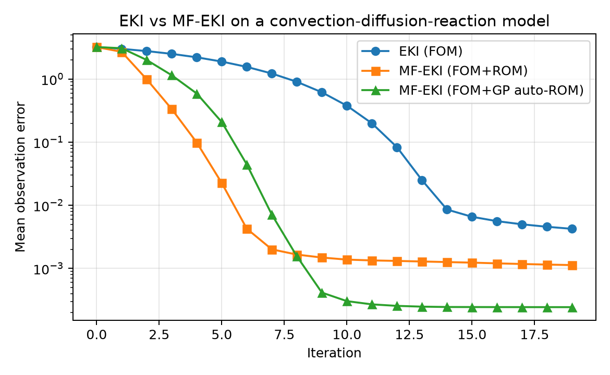

EKI and MF-EKI Demo#
This demo compares single-fidelity EKI with two multifidelity variants on a convection-diffusion-reaction (CDR) model with two inferred parameters:
EKI using only the full-order model (FOM),
MF-EKI using a tailored projection-based ROM, and
MF-EKI using automatic on-the-fly Gaussian-process ROM construction.
The forward model solves a steady 2D CDR equation on a structured grid, and the
QoI is the right-boundary flux functional used in the existing UQ examples.
The example estimates the diffusion coefficient nu and reaction rate
sigma from a synthetic observation.
Run the demo#
The canonical implementation lives under examples/ and is validated against
the current romtools checkout in CI.
python examples/eki_mf_eki_demo/example.py
A reduced configuration is available for quick validation:
python examples/eki_mf_eki_demo/example.py --smoke
Regenerate the published figure#
The documentation build does not execute this scientific demo implicitly. Regenerate the checked-in figure explicitly after changes that affect the benchmark:
python examples/eki_mf_eki_demo/example.py \
--output docs/source/demos/notebooks/eki_mf_eki_demo.png
Results#
{kind=link}

Mean observation error across iterations for single-fidelity EKI, multifidelity EKI with a tailored ROM, and multifidelity EKI with automatic Gaussian-process ROM construction.#
Implementation#
1import argparse
2import os
3import shutil
4import sys
5
6import matplotlib.pyplot as plt
7import numpy as np
8
9from romtools.workflows.inverse.eki_drivers import run_eki
10from romtools.workflows.inverse.mf_eki_drivers import mf_eki_with_auto_rom, run_mf_eki
11from romtools.workflows.parameter_spaces import HeterogeneousParameterSpace
12from romtools.workflows.parameters import UniformParameter
13
14
15EXAMPLE_DIR = os.path.abspath(os.path.dirname(__file__))
16CDR_PATH = os.path.join(EXAMPLE_DIR, "convection_diffusion_reaction_system_code")
17if CDR_PATH not in sys.path:
18 sys.path.insert(0, CDR_PATH)
19
20import cdr # noqa: E402
21import cdr_rom # noqa: E402
22
23
24class CdrFomQoiModel:
25 def __init__(self, system: cdr.AdvectionDiffusionSystem, b_vec: np.ndarray):
26 self._system = system
27 self._b_vec = b_vec
28
29 def populate_run_directory(self, run_directory: str, parameter_sample: dict) -> None:
30 with open(os.path.join(run_directory, "params.txt"), "w", encoding="utf-8") as handle:
31 for key, value in parameter_sample.items():
32 handle.write(f"{key}: {value}\n")
33
34 def run_model(self, run_directory: str, parameter_sample: dict) -> int:
35 nu = float(parameter_sample["nu"])
36 sigma = float(parameter_sample["sigma"])
37 u = cdr.solveFom(self._system, self._b_vec, nu, sigma)
38 np.savez(os.path.join(run_directory, "solution.npz"), u=u)
39 return 0
40
41 def compute_qoi(self, run_directory: str, parameter_sample: dict) -> np.ndarray:
42 data = np.load(os.path.join(run_directory, "solution.npz"))
43 u = data["u"]
44 qoi = np.dot(self._system.C, u)
45 return np.array([qoi])
46
47
48class CdrRomQoiModel:
49 def __init__(self, system: cdr.AdvectionDiffusionSystem, basis: np.ndarray, b_vec: np.ndarray):
50 self._system = system
51 self._basis = basis
52 self._b_vec = b_vec
53 self._rom = cdr_rom.primalGalerkinROM(system, basis)
54
55 def populate_run_directory(self, run_directory: str, parameter_sample: dict) -> None:
56 with open(os.path.join(run_directory, "params.txt"), "w", encoding="utf-8") as handle:
57 for key, value in parameter_sample.items():
58 handle.write(f"{key}: {value}\n")
59
60 def run_model(self, run_directory: str, parameter_sample: dict) -> int:
61 nu = float(parameter_sample["nu"])
62 sigma = float(parameter_sample["sigma"])
63 u_hat = cdr_rom.solveRom(self._rom, self._b_vec, nu, sigma)
64 u = self._basis @ u_hat
65 np.savez(os.path.join(run_directory, "solution.npz"), u=u, u_hat=u_hat)
66 return 0
67
68 def compute_qoi(self, run_directory: str, parameter_sample: dict) -> np.ndarray:
69 data = np.load(os.path.join(run_directory, "solution.npz"))
70 u = data["u"]
71 qoi = np.dot(self._system.C, u)
72 return np.array([qoi])
73
74
75class CdrRomBuilder:
76 def __init__(self, system: cdr.AdvectionDiffusionSystem, b_vec: np.ndarray, rom_dim: int = 12):
77 self._system = system
78 self._b_vec = b_vec
79 self._rom_dim = rom_dim
80
81 def build_from_training_dirs(
82 self,
83 offline_data_dir: str,
84 training_data_dirs,
85 training_parameters=None,
86 training_qois=None,
87 ):
88 del offline_data_dir, training_parameters, training_qois
89 snapshots = []
90 for run_dir in training_data_dirs:
91 solution_path = os.path.join(run_dir, "solution.npz")
92 if os.path.exists(solution_path):
93 data = np.load(solution_path)
94 snapshots.append(data["u"])
95 if not snapshots:
96 raise RuntimeError("No training snapshots found for ROM construction.")
97 snapshot_matrix = np.column_stack(snapshots)
98 u, _, _ = np.linalg.svd(snapshot_matrix, full_matrices=False)
99 basis = u[:, : min(self._rom_dim, u.shape[1])]
100 return CdrRomQoiModel(self._system, basis, self._b_vec)
101
102
103def _collect_error_history(work_dir: str, mf: bool) -> list:
104 history = []
105 iteration = 0
106 while True:
107 restart_path = os.path.join(work_dir, f"iteration_{iteration}", "restart.npz")
108 if not os.path.exists(restart_path):
109 break
110 data = np.load(restart_path, allow_pickle=True)
111 if mf:
112 sample_one_fom_results = data["sample_one_fom_results"].item()
113 errors = sample_one_fom_results["errors"]
114 else:
115 errors = data["errors"]
116 history.append(float(np.mean(np.linalg.norm(errors, axis=0))))
117 iteration += 1
118 return history
119
120
121def main(smoke: bool = False, work_dir: str = None, output_path: str = None) -> None:
122 np.random.seed(1)
123
124 grid_size = 10 if smoke else 25
125 fom_ensemble_size = 3 if smoke else 4
126 rom_extra_ensemble_size = 4 if smoke else 12
127 max_iterations = 2 if smoke else 20
128 rom_dim = 4 if smoke else 12
129 rom_substep_start_iteration = 0 if smoke else 1
130 rom_substep_end_iteration = 1 if smoke else 15
131 num_rom_substeps = 1 if smoke else 4
132 max_rom_training_history = 2 if smoke else 3
133
134 system = cdr.AdvectionDiffusionSystem(Nx=grid_size, Ny=grid_size)
135 b_vec = np.array([1.0, 1.0])
136
137 nu_true = 0.04
138 sigma_true = 0.3
139 u_true = cdr.solveFom(system, b_vec, nu_true, sigma_true)
140 observations = np.array([np.dot(system.C, u_true)])
141 observations_covariance = np.eye(1) * 1e-5
142
143 parameter_space = HeterogeneousParameterSpace(
144 [
145 UniformParameter("nu", 0.01, 0.08),
146 UniformParameter("sigma", 0.1, 0.6),
147 ]
148 )
149
150 base_dir = os.path.abspath(
151 work_dir if work_dir is not None else os.path.join(EXAMPLE_DIR, "eki_mf_eki_work")
152 )
153 eki_dir = os.path.join(base_dir, "eki")
154 mf_dir = os.path.join(base_dir, "mf_eki")
155 mf_auto_rom_dir = os.path.join(base_dir, "mf_eki_auto_rom")
156 shutil.rmtree(base_dir, ignore_errors=True)
157 os.makedirs(base_dir, exist_ok=True)
158
159 fom_model = CdrFomQoiModel(system, b_vec)
160 rom_builder = CdrRomBuilder(system, b_vec, rom_dim=rom_dim)
161
162 run_eki(
163 model=fom_model,
164 parameter_space=parameter_space,
165 observations=observations,
166 observations_covariance=observations_covariance,
167 absolute_eki_directory=eki_dir,
168 ensemble_size=fom_ensemble_size,
169 max_iterations=max_iterations,
170 evaluation_concurrency=1,
171 )
172
173 run_mf_eki(
174 model=fom_model,
175 rom_model_builder=rom_builder,
176 parameter_space=parameter_space,
177 observations=observations,
178 observations_covariance=observations_covariance,
179 absolute_eki_directory=mf_dir,
180 rom_substep_start_iteration=rom_substep_start_iteration,
181 rom_substep_end_iteration=rom_substep_end_iteration,
182 num_rom_substeps=num_rom_substeps,
183 fom_ensemble_size=fom_ensemble_size,
184 rom_extra_ensemble_size=rom_extra_ensemble_size,
185 rom_tolerance=0.001,
186 max_iterations=max_iterations,
187 fom_evaluation_concurrency=1,
188 rom_evaluation_concurrency=1,
189 max_rom_training_history=max_rom_training_history,
190 )
191
192 mf_eki_with_auto_rom(
193 model=fom_model,
194 parameter_space=parameter_space,
195 observations=observations,
196 observations_covariance=observations_covariance,
197 absolute_eki_directory=mf_auto_rom_dir,
198 rom_substep_start_iteration=rom_substep_start_iteration,
199 rom_substep_end_iteration=rom_substep_end_iteration,
200 num_rom_substeps=num_rom_substeps,
201 fom_ensemble_size=fom_ensemble_size,
202 rom_extra_ensemble_size=rom_extra_ensemble_size,
203 rom_tolerance=0.001,
204 max_iterations=max_iterations,
205 fom_evaluation_concurrency=1,
206 rom_evaluation_concurrency=1,
207 rom_type="gp",
208 rom_args={
209 "normalize_parameters": True,
210 "normalize_targets": True,
211 },
212 max_rom_training_history=max_rom_training_history,
213 )
214
215 eki_history = _collect_error_history(eki_dir, mf=False)
216 mf_history = _collect_error_history(mf_dir, mf=True)
217 mf_auto_rom_history = _collect_error_history(mf_auto_rom_dir, mf=True)
218
219 plt.figure(figsize=(6.5, 4.0))
220 plt.plot(eki_history, marker="o", label="EKI (FOM)")
221 plt.plot(mf_history, marker="s", label="MF-EKI (FOM+ROM)")
222 plt.plot(mf_auto_rom_history, marker="^", label="MF-EKI (FOM+GP auto-ROM)")
223 plt.yscale("log")
224 plt.xlabel("Iteration")
225 plt.ylabel("Mean observation error")
226 plt.title("EKI vs MF-EKI on a convection-diffusion-reaction model")
227 plt.grid(True, alpha=0.3)
228 plt.legend()
229
230 output_path = os.path.abspath(
231 output_path
232 if output_path is not None
233 else os.path.join(EXAMPLE_DIR, "eki_mf_eki_demo.png")
234 )
235 os.makedirs(os.path.dirname(output_path), exist_ok=True)
236 plt.tight_layout()
237 plt.savefig(output_path, dpi=180)
238 plt.close()
239 print(f"Wrote {output_path}")
240
241
242def _parse_args():
243 parser = argparse.ArgumentParser(description="Run the EKI/MF-EKI CDR demo.")
244 parser.add_argument(
245 "--smoke",
246 action="store_true",
247 help="Run a reduced configuration intended for CI validation.",
248 )
249 parser.add_argument(
250 "--work-dir",
251 default=None,
252 help="Override the directory used for EKI iteration data.",
253 )
254 parser.add_argument(
255 "--output",
256 default=None,
257 help="Override the output figure path.",
258 )
259 return parser.parse_args()
260
261
262if __name__ == "__main__":
263 args = _parse_args()
264 main(smoke=args.smoke, work_dir=args.work_dir, output_path=args.output)